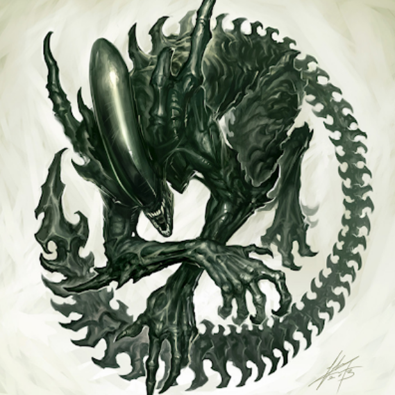
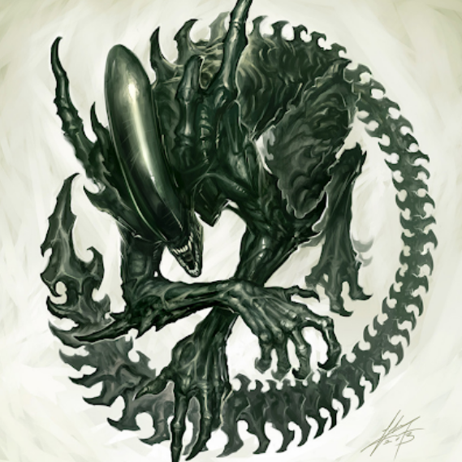

В главных ролях:
- Роберт Паттинсон
- Зои Кравиц
- Колин Фаррелл
- Питер Сарсгаард
- Пол Дано
- Энди Серкис
- Джеффри Райт
- Джон Туртурро
- Макс Карвер
- Кон О’Нилл
Предстоящий американский супергеройский фильм, основанный на одноимённых комиксах издательства DC Comics. Картина будет выпущена компанией Warner Bros. и будет перезагрузкой всех фильмов о Бэтмене.
Фильм является десятым по счёту фильмом из Расширенной вселенной DC. Режиссёром и сценаристом фильма выступит Мэтт Ривз, а главную роль исполнит Роберт Паттинсон
Разработка
В октябре 2014 года студия Warner Bros. объявила, что в разработке находится сольный фильм о Бэтмене, роль которого вновь исполнит Бен Аффлек. В июле 2015 года сообщалось, что Аффлек ведёт переговоры со студией по поводу постановки фильма и совместного написания сценария с Джеффом Джонсом.
После выхода фильма «Бэтмен против Супермена: На заре справедливости» руководитель агентства WME Патрик Уайтсел подтвердил, что Аффлек написал сценарий для сольного фильма о Бэтмене и в настоящий момент его рассматривают студия и DC. В мае 2016 года Джереми Айронс подтвердил, что он появится в фильме про Тёмного Рыцаря.
На Comic-Con в Сан-Диего в июле 2016 года было официально подтверждено, что Аффлек станет режиссёром картины. В августе 2016 года на одной из страниц Аффлека в социальных сетях был опубликован тестовый материал, в котором был показан персонаж Детстроук. 8 сентября 2016 года Джефф Джонс подтвердил, что Джо Манганьелло сыграет наёмника Слейда Уилсона, который, возможно, станет главным злодеем фильма.
Рецензии появятся после премьеры.
24 июня 2021 — Аргентина
24 июня 2021 — Россия
24 июня 2021 — Словакия
25 июня 2021 — Американские Виргинские острова
25 июня 2021 — Бельгия
25 июня 2021 — Бразилия
25 июня 2021 — Великобритания
25 июня 2021 — Канада
25 июня 2021 — Литва
25 июня 2021 — Португалия
25 июня 2021 — США
25 июня 2021 — Турция
26 июня 2021 — Япония
30 июня 2021 — Франция
Роберт Паттинсон
Robert Pattinson| Карьера | Актер, сценарист, продюсер |
| Рост | 1.85 м |
| Дата рождения | 13 мая, 1986 • Телец • 33 года |
| Место рождения | Лондон, Англия, Великобритания |
| Жанры | Драма, мелодрама, фэнтези |
| Всего фильмов | 111, 2004 — 2021 |
Зои Кравиц
Zoe Kravitz| Карьера | Актриса, сценарист, продюсер |
| Рост | 1.57 м |
| Дата рождения | 1 декабря, 1988 • Стрелец • 31 год |
| Место рождения | Лос-Анджелес, Калифорния, США |
| Жанры | Драма, комедия, боевик |
| Всего фильмов | 67, 2007 — 2021 |
Колин Фаррелл
Colin Farrell
| Карьера | Актер, продюсер |
| Рост | 1.78 м |
| Дата рождения | 31 мая, 1976 • Близнецы • 43 года |
| Место рождения | Дублин, Ирландия |
| Жанры | Драма, триллер, криминал |
| Всего фильмов | 153, 1995 — 2021 |
Питер Сарсгаард
Peter Sarsgaard| Карьера | Актер, продюсер |
| Рост | 1.80 м |
| Дата рождения | 7 марта, 1971 • Рыбы • 49 лет |
| Место рождения | Бельвиль, Иллинойс, США |
| Жанры | Драма, триллер, криминал |
| Всего фильмов | 100, 1990 — 2021 |
Пол Дано
Paul Dano| Карьера | Актер, продюсер, режиссер, сценарист |
| Рост | 1.85 м |
| Дата рождения | 19 июня, 1984 • Близнецы • 35 лет |
| Место рождения | Нью-Йорк, США |
| Жанры | Драма, комедия, мелодрама |
| Всего фильмов | 62, 1999 — 2021 |
Энди Серкис
Andy Serkis| Карьера | Актер, продюсер, режиссер, сценарист |
| Рост | 1.73 м |
| Дата рождения | 20 апреля, 1964 • Овен • 55 лет |
| Место рождения | Руислип, Лондон, Англия, Великобритания |
| Жанры | Драма, комедия, приключения |
| Всего фильмов | 186, 1975 — 2021 |
Джеффри Райт
Jeffrey Wright| Карьера | Актер, продюсер |
| Рост | 1.80 м |
| Дата рождения | 7 декабря, 1965 • Стрелец • 54 года |
| Место рождения | Вашингтон, округ Колумбия, США |
| Жанры | Драма, триллер, комедия |
| Всего фильмов | 114, 1990 — 2021 |
Джон Туртурро
John Turturro| Карьера | Актер, сценарист, режиссер, продюсер |
| Рост | 1.84 м |
| Дата рождения | 28 февраля, 1957 • Рыбы • 63 года |
| Место рождения | Бруклин, Нью-Йорк, США |
| Жанры | Драма, комедия, криминал |
| Всего фильмов | 166, 1980 — 2021 |
Играя в основном беспокойных и нервных персонажей, Джон Туртурро стал одним из любимых актёров среди поклонников артхаусного кино. Он активно сотрудничал с режиссёром Спайком Ли, приняв участие в его картинах: «Делай, как надо!», «Наседки», «Девушка Номер 6», «Кровавое лето Сэма». А также, начиная с 1990-х годов, играл в фильмах братьев Коэн: «Перекрёсток Миллера», «Бартон Финк», «Большой Лебовски» и «О, где же ты, брат?». В 2000-х годах Туртурро принял участие в трёх частях успешного коммерческого проекта: «Трансформеры», «Трансформеры: Месть падших» и «Трансформеры 3: Тёмная сторона Луны».
В качестве режиссёра Туртурро снял шесть картин, а также был продюсером трёх художественных и одного документального фильмов.
Макс Карвер
Max Carver| Карьера | Актер, сценарист, продюсер |
| Рост | 1.83 м |
| Дата рождения | 1 августа, 1988 • Лев • 31 год |
| Место рождения | Сан-Франциско, Калифорния, США |
| Жанры | Комедия, драма, короткометражка |
| Всего фильмов | 27, 2004 — 2021 |
Кон О’Нилл
Con O'Neill| Карьера | Актер |
| Рост | 1.73 м |
| Дата рождения | 15 августа, 1966 • стрелец • 54 года |
| Место рождения | Уэстон-сьюпер-Мэр, Сомерсет, Англия, Великобритания |
| Жанры | драма, криминал, детектив |
| Всего фильмов | 72, 1982 — 2021 |
Тут скоро появятся награды
Тут скоро появятся факты
Тут скоро появятся сайты